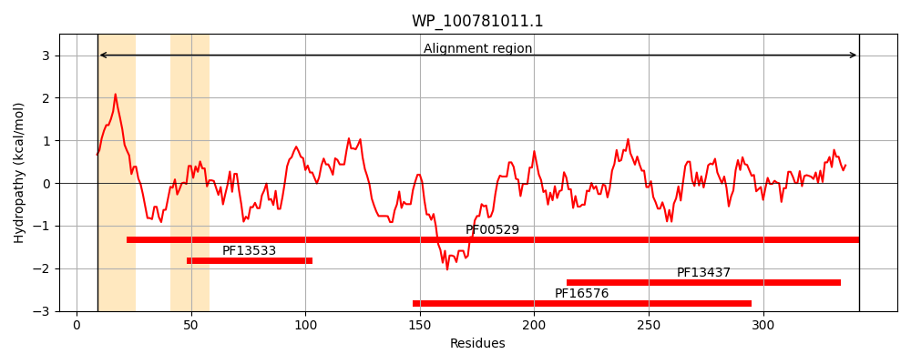
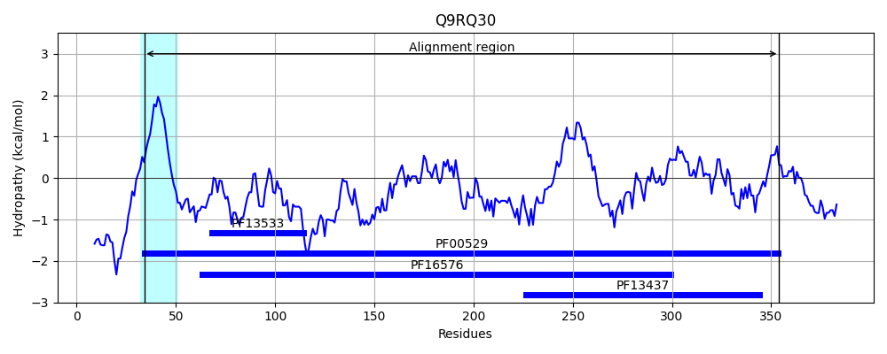
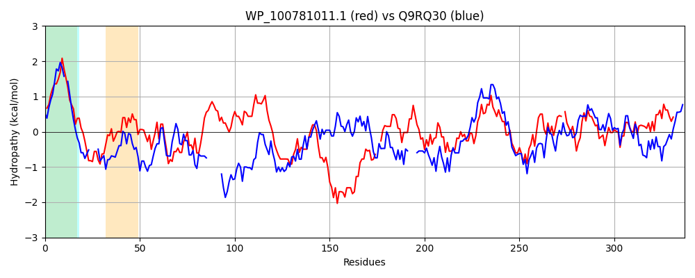

Hit Accession: Q9RQ30
Hit TCID: 8.A.1.1.2
Hit Description: gnl|BL_ORD_ID|18885 gnl|TC-DB|Q9RQ30|8.A.1.1.2 Efflux pump protein FarA - Neisseria gonorrhoeae.
Mach Len: 337
e:0.000000
Query TMS Count : 2
Hit TMS Count: 1
TMS-Overlap Score: 0.900000
Predicted Substrates:None
BLAST Alignment:
Score: 471 , Bit scores: 186 bits, E-value: 1.3e-55, Alignment length: 337, Percentage identity: 36
Query: 9 ILVLAALGAAALAAASYGVYWWHTGRFMQTTDDAYVGGDISAISSKVSGYIQQLAVQDNMAVKKGDLLIRIDDRDYRAALAKAAGEVAAQQAALADILATRQLQQATIAGSAASLLAATAATEKLANDNRRYNALAASSAISAQIRDNASADYRRAHAEQEKAKADKTVAERQLA--VLDARQQQILAALAQAQANLEMARLNLSYTDIRAPFDGVIGNRRAWSGSFVSSGTQLLSLVPAHGLWIDANFKENQLAHMRAGQPVTIVADVLPNR-TFKGHVASLAPATGSRFSILPAENATGNFTKIVQRVPVRIALEGDGAKLDVLRPGLSVIVTVN 342
+ +L AL AAA A +++ ++W H + T+DAYV G + ++ + G ++++ D AVKKGD+L +DD + A +A E L + + Q A + + A + A + +D RR +ALA S A+SA+ +A +A A + A A+++ A L V Q ++ A+ + L+ A LNL T +RAP DG + R G V++G L+++VP +W+DANFKE QL HM+ GQP +V+D+ + ++G VA + TGS FS++PA+NATGN+ K+VQRVPVRI L + LR GLS+ V V+
Sbjct: 34 LTLLFALSAAA-AGSAFFLWWQHE----EETEDAYVAGRVVQVTPQKGGTVRKVLHDDTDAVKKGDVLAVLDDDNDVLAYERAKNE-------LVQAVRQNRRQNAATSQAGAQVALRRADLARAQDDLRRRSALAESGAVSAEELAHARTAVSQAQAAVKAALAEESSARAALGGDVSLREQPEVQTAIGR----LKDAWLNLRRTQVRAPADGQVAKRSVQVGQQVAAGAPLMAVVPLSDVWVDANFKETQLRHMKIGQPAELVSDLYGKQIVYRGRVAGFSAGTGSAFSLIPAQNATGNWIKVVQRVPVRIVLNREDVDRHPLRIGLSMTVKVD 354 | Protein Hydropathy Plots: |
|---|
|  |  |
Pairwise Alignment-Hydropathy Plot:
|
|---|
|  |